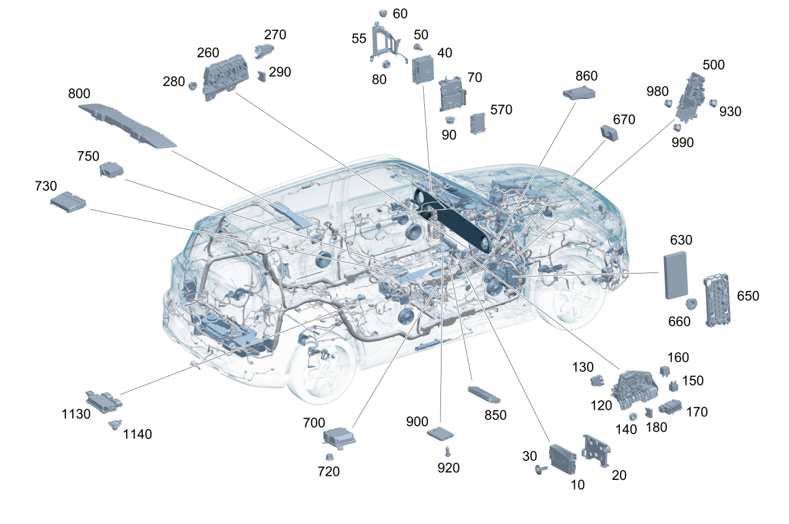

| № | Артикул | Название | Кол. | Примечание | Ограничение |
|---|---|---|---|---|---|
| 10 | A 174 901 07 06 | Номер блока управления (CU, IDENTIFICATION NUMBER) | 1 | Блок управления электронного замка зажигания [672] ДЕТАЛЬ ПОСЛЕ УСТАН.ПРОВЕРИТЬ НА АКТУАЛЬНОСТЬ "ПРОШИВНОГО" ПО | |
| 10 | A 174 901 05 06 | Номер блока управления (CU, IDENTIFICATION NUMBER) | 1 | Блок управления электронного замка зажигания [672] ДЕТАЛЬ ПОСЛЕ УСТАН.ПРОВЕРИТЬ НА АКТУАЛЬНОСТЬ "ПРОШИВНОГО" ПО | 889 |
| 20 | A 174 545 30 00 | Держатель (HOLDER) | 1 | Держатель БУ электронного замка зажигания | |
| 30 | A 002 984 60 29 | Винт со сфероцил. головой (COMBI. PAN HEAD SCREW) | 3 | Болт держателя блока управления, электронный замок зажигания; 6X20 | |
| 40 | A 174 901 95 06 | Номер блока управления (CU, IDENTIFICATION NUMBER) | 1 | Головное устройство [672] ДЕТАЛЬ ПОСЛЕ УСТАН.ПРОВЕРИТЬ НА АКТУАЛЬНОСТЬ "ПРОШИВНОГО" ПО | 528+0U1 |
| 40 | A 174 901 97 06 | Номер блока управления (CU, IDENTIFICATION NUMBER) | 1 | Головное устройство [672] ДЕТАЛЬ ПОСЛЕ УСТАН.ПРОВЕРИТЬ НА АКТУАЛЬНОСТЬ "ПРОШИВНОГО" ПО | 528+0U3 |
| 40 | A 174 901 96 06 | Номер блока управления (CU, IDENTIFICATION NUMBER) | 1 | Головное устройство [672] ДЕТАЛЬ ПОСЛЕ УСТАН.ПРОВЕРИТЬ НА АКТУАЛЬНОСТЬ "ПРОШИВНОГО" ПО | 528+(0U2/0U4) |
| 40 | A 174 901 00 07 | Номер блока управления (CU, IDENTIFICATION NUMBER) | 1 | Головное устройство [672] ДЕТАЛЬ ПОСЛЕ УСТАН.ПРОВЕРИТЬ НА АКТУАЛЬНОСТЬ "ПРОШИВНОГО" ПО | 528+(0U7/0U9) |
| 40 | A 174 901 98 06 | Номер блока управления (CU, IDENTIFICATION NUMBER) | 1 | Головное устройство [672] ДЕТАЛЬ ПОСЛЕ УСТАН.ПРОВЕРИТЬ НА АКТУАЛЬНОСТЬ "ПРОШИВНОГО" ПО | 528+0U5+830 |
| 40 | A 174 901 99 06 | Номер блока управления (CU, IDENTIFICATION NUMBER) | 1 | Головное устройство [672] ДЕТАЛЬ ПОСЛЕ УСТАН.ПРОВЕРИТЬ НА АКТУАЛЬНОСТЬ "ПРОШИВНОГО" ПО | 528+0U5 |
| 40 | A 174 901 01 07 | Номер блока управления (CU, IDENTIFICATION NUMBER) | 1 | Головное устройство [672] ДЕТАЛЬ ПОСЛЕ УСТАН.ПРОВЕРИТЬ НА АКТУАЛЬНОСТЬ "ПРОШИВНОГО" ПО | 528+0U8 |
| 40 | A 540 901 07 02 | Номер блока управления (CU, IDENTIFICATION NUMBER) | 1 | Головное устройство [672] ДЕТАЛЬ ПОСЛЕ УСТАН.ПРОВЕРИТЬ НА АКТУАЛЬНОСТЬ "ПРОШИВНОГО" ПО | 530+0U1 |
| 40 | A 540 901 09 02 | Номер блока управления (CU, IDENTIFICATION NUMBER) | 1 | Головное устройство [672] ДЕТАЛЬ ПОСЛЕ УСТАН.ПРОВЕРИТЬ НА АКТУАЛЬНОСТЬ "ПРОШИВНОГО" ПО | 530+0U3 |
| 40 | A 540 901 08 02 | Номер блока управления (CU, IDENTIFICATION NUMBER) | 1 | Головное устройство [672] ДЕТАЛЬ ПОСЛЕ УСТАН.ПРОВЕРИТЬ НА АКТУАЛЬНОСТЬ "ПРОШИВНОГО" ПО | 530+(0U2/0U4) |
| 40 | A 540 901 12 02 | Номер блока управления (CU, IDENTIFICATION NUMBER) | 1 | Головное устройство [672] ДЕТАЛЬ ПОСЛЕ УСТАН.ПРОВЕРИТЬ НА АКТУАЛЬНОСТЬ "ПРОШИВНОГО" ПО | 530+(0U7/0U9) |
| 40 | A 540 901 10 02 | Номер блока управления (CU, IDENTIFICATION NUMBER) | 1 | Головное устройство [672] ДЕТАЛЬ ПОСЛЕ УСТАН.ПРОВЕРИТЬ НА АКТУАЛЬНОСТЬ "ПРОШИВНОГО" ПО | 530+0U5+830 |
| 40 | A 540 901 11 02 | Номер блока управления (CU, IDENTIFICATION NUMBER) | 1 | Головное устройство [672] ДЕТАЛЬ ПОСЛЕ УСТАН.ПРОВЕРИТЬ НА АКТУАЛЬНОСТЬ "ПРОШИВНОГО" ПО | 530+0U5 |
| 40 | A 540 901 13 02 | Номер блока управления (CU, IDENTIFICATION NUMBER) | 1 | Головное устройство [672] ДЕТАЛЬ ПОСЛЕ УСТАН.ПРОВЕРИТЬ НА АКТУАЛЬНОСТЬ "ПРОШИВНОГО" ПО | 530+0U8 |
| 40 | A 174 901 76 09 | Номер блока управления | 1 | Головное устройство [672] ДЕТАЛЬ ПОСЛЕ УСТАН.ПРОВЕРИТЬ НА АКТУАЛЬНОСТЬ "ПРОШИВНОГО" ПО | 528+0U1+(807+057) |
| 40 | A 174 901 48 12 | Номер блока управления (CU, IDENTIFICATION NUMBER) | 1 | Головное устройство [672] ДЕТАЛЬ ПОСЛЕ УСТАН.ПРОВЕРИТЬ НА АКТУАЛЬНОСТЬ "ПРОШИВНОГО" ПО | 528+0U1+(807+057) |
| 40 | A 174 901 48 12 | Номер блока управления (CU, IDENTIFICATION NUMBER) | 1 | Головное устройство [672] ДЕТАЛЬ ПОСЛЕ УСТАН.ПРОВЕРИТЬ НА АКТУАЛЬНОСТЬ "ПРОШИВНОГО" ПО | 528+0U1 |
| 40 | A 174 901 77 09 | Номер блока управления | 1 | Головное устройство [672] ДЕТАЛЬ ПОСЛЕ УСТАН.ПРОВЕРИТЬ НА АКТУАЛЬНОСТЬ "ПРОШИВНОГО" ПО | 528+(0U2/0U4)+(807+057) |
| 40 | A 174 901 49 12 | Номер блока управления (CU, IDENTIFICATION NUMBER) | 1 | Головное устройство [672] ДЕТАЛЬ ПОСЛЕ УСТАН.ПРОВЕРИТЬ НА АКТУАЛЬНОСТЬ "ПРОШИВНОГО" ПО | 528+(0U2/0U4)+(807+057) |
| 40 | A 174 901 49 12 | Номер блока управления (CU, IDENTIFICATION NUMBER) | 1 | Головное устройство [672] ДЕТАЛЬ ПОСЛЕ УСТАН.ПРОВЕРИТЬ НА АКТУАЛЬНОСТЬ "ПРОШИВНОГО" ПО | 528+(0U2/0U4) |
| 40 | A 174 901 78 09 | Номер блока управления | 1 | Головное устройство [672] ДЕТАЛЬ ПОСЛЕ УСТАН.ПРОВЕРИТЬ НА АКТУАЛЬНОСТЬ "ПРОШИВНОГО" ПО | 528+0U3+(807+057) |
| 40 | A 174 901 50 12 | Номер блока управления (CU, IDENTIFICATION NUMBER) | 1 | Головное устройство [672] ДЕТАЛЬ ПОСЛЕ УСТАН.ПРОВЕРИТЬ НА АКТУАЛЬНОСТЬ "ПРОШИВНОГО" ПО | 528+0U3+(807+057) |
| 40 | A 174 901 50 12 | Номер блока управления (CU, IDENTIFICATION NUMBER) | 1 | Головное устройство [672] ДЕТАЛЬ ПОСЛЕ УСТАН.ПРОВЕРИТЬ НА АКТУАЛЬНОСТЬ "ПРОШИВНОГО" ПО | 528+0U3 |
| 40 | A 174 901 79 09 | Номер блока управления | 1 | Головное устройство [672] ДЕТАЛЬ ПОСЛЕ УСТАН.ПРОВЕРИТЬ НА АКТУАЛЬНОСТЬ "ПРОШИВНОГО" ПО | 528+0U5+830+(807+057) |
| 40 | A 174 901 79 09 | Номер блока управления | 1 | Головное устройство [672] ДЕТАЛЬ ПОСЛЕ УСТАН.ПРОВЕРИТЬ НА АКТУАЛЬНОСТЬ "ПРОШИВНОГО" ПО | 528+0U5+(807+057) |
| 40 | A 174 901 51 12 | Номер блока управления (CU, IDENTIFICATION NUMBER) | 1 | Головное устройство [672] ДЕТАЛЬ ПОСЛЕ УСТАН.ПРОВЕРИТЬ НА АКТУАЛЬНОСТЬ "ПРОШИВНОГО" ПО | 528+0U5+(807+057) |
| 40 | A 174 901 51 12 | Номер блока управления (CU, IDENTIFICATION NUMBER) | 1 | Головное устройство [672] ДЕТАЛЬ ПОСЛЕ УСТАН.ПРОВЕРИТЬ НА АКТУАЛЬНОСТЬ "ПРОШИВНОГО" ПО | 528+0U5 |
| 40 | A 174 901 80 09 | Номер блока управления | 1 | Головное устройство [672] ДЕТАЛЬ ПОСЛЕ УСТАН.ПРОВЕРИТЬ НА АКТУАЛЬНОСТЬ "ПРОШИВНОГО" ПО | 528+0U5+(807+057) |
| 40 | A 174 901 80 09 | Номер блока управления | 1 | Головное устройство [672] ДЕТАЛЬ ПОСЛЕ УСТАН.ПРОВЕРИТЬ НА АКТУАЛЬНОСТЬ "ПРОШИВНОГО" ПО | 528+0U5+8S5+(807+057) |
| 40 | A 174 901 52 12 | Номер блока управления (CU, IDENTIFICATION NUMBER) | 1 | Головное устройство [672] ДЕТАЛЬ ПОСЛЕ УСТАН.ПРОВЕРИТЬ НА АКТУАЛЬНОСТЬ "ПРОШИВНОГО" ПО | 528+0U5+8S5+(807+057) |
| 40 | A 174 901 52 12 | Номер блока управления (CU, IDENTIFICATION NUMBER) | 1 | Головное устройство [672] ДЕТАЛЬ ПОСЛЕ УСТАН.ПРОВЕРИТЬ НА АКТУАЛЬНОСТЬ "ПРОШИВНОГО" ПО | 528+0U5+8S5 |
| 40 | A 174 901 81 09 | Номер блока управления | 1 | Головное устройство [672] ДЕТАЛЬ ПОСЛЕ УСТАН.ПРОВЕРИТЬ НА АКТУАЛЬНОСТЬ "ПРОШИВНОГО" ПО | 528+(0U7/0U9)+(807+057) |
| 40 | A 174 901 53 12 | Номер блока управления (CU, IDENTIFICATION NUMBER) | 1 | Головное устройство [672] ДЕТАЛЬ ПОСЛЕ УСТАН.ПРОВЕРИТЬ НА АКТУАЛЬНОСТЬ "ПРОШИВНОГО" ПО | 528+(0U7/0U9)+(807+057) |
| 40 | A 174 901 53 12 | Номер блока управления (CU, IDENTIFICATION NUMBER) | 1 | Головное устройство [672] ДЕТАЛЬ ПОСЛЕ УСТАН.ПРОВЕРИТЬ НА АКТУАЛЬНОСТЬ "ПРОШИВНОГО" ПО | 528+(0U7/0U9) |
| 40 | A 174 901 82 09 | Номер блока управления | 1 | Головное устройство [672] ДЕТАЛЬ ПОСЛЕ УСТАН.ПРОВЕРИТЬ НА АКТУАЛЬНОСТЬ "ПРОШИВНОГО" ПО | 528+0U8+(807+057) |
| 40 | A 174 901 54 12 | Номер блока управления (CU, IDENTIFICATION NUMBER) | 1 | Головное устройство [672] ДЕТАЛЬ ПОСЛЕ УСТАН.ПРОВЕРИТЬ НА АКТУАЛЬНОСТЬ "ПРОШИВНОГО" ПО | 528+0U8+(807+057) |
| 40 | A 174 901 54 12 | Номер блока управления (CU, IDENTIFICATION NUMBER) | 1 | Головное устройство [672] ДЕТАЛЬ ПОСЛЕ УСТАН.ПРОВЕРИТЬ НА АКТУАЛЬНОСТЬ "ПРОШИВНОГО" ПО | 528+0U8 |
| 40 | A 540 901 89 02 | Номер блока управления | 1 | Головное устройство [672] ДЕТАЛЬ ПОСЛЕ УСТАН.ПРОВЕРИТЬ НА АКТУАЛЬНОСТЬ "ПРОШИВНОГО" ПО | 530+0U1+(807+057) |
| 40 | A 540 901 99 03 | Номер блока управления (CU, IDENTIFICATION NUMBER) | 1 | Головное устройство [672] ДЕТАЛЬ ПОСЛЕ УСТАН.ПРОВЕРИТЬ НА АКТУАЛЬНОСТЬ "ПРОШИВНОГО" ПО | 530+0U1+(807+057) |
| 40 | A 540 901 99 03 | Номер блока управления (CU, IDENTIFICATION NUMBER) | 1 | Головное устройство [672] ДЕТАЛЬ ПОСЛЕ УСТАН.ПРОВЕРИТЬ НА АКТУАЛЬНОСТЬ "ПРОШИВНОГО" ПО | 530+0U1 |
| 40 | A 540 901 90 02 | Номер блока управления | 1 | Головное устройство [672] ДЕТАЛЬ ПОСЛЕ УСТАН.ПРОВЕРИТЬ НА АКТУАЛЬНОСТЬ "ПРОШИВНОГО" ПО | 530+(0U2/0U4)+(807+057) |
| 40 | A 540 901 00 04 | Номер блока управления (CU, IDENTIFICATION NUMBER) | 1 | Головное устройство [672] ДЕТАЛЬ ПОСЛЕ УСТАН.ПРОВЕРИТЬ НА АКТУАЛЬНОСТЬ "ПРОШИВНОГО" ПО | 530+(0U2/0U4)+(807+057) |
| 40 | A 540 901 00 04 | Номер блока управления (CU, IDENTIFICATION NUMBER) | 1 | Головное устройство [672] ДЕТАЛЬ ПОСЛЕ УСТАН.ПРОВЕРИТЬ НА АКТУАЛЬНОСТЬ "ПРОШИВНОГО" ПО | 530+(0U2/0U4) |
| 40 | A 540 901 91 02 | Номер блока управления | 1 | Головное устройство [672] ДЕТАЛЬ ПОСЛЕ УСТАН.ПРОВЕРИТЬ НА АКТУАЛЬНОСТЬ "ПРОШИВНОГО" ПО | 530+0U3+(807+057) |
| 40 | A 540 901 01 04 | Номер блока управления (CU, IDENTIFICATION NUMBER) | 1 | Головное устройство [672] ДЕТАЛЬ ПОСЛЕ УСТАН.ПРОВЕРИТЬ НА АКТУАЛЬНОСТЬ "ПРОШИВНОГО" ПО | 530+0U3+(807+057) |
| 40 | A 540 901 01 04 | Номер блока управления (CU, IDENTIFICATION NUMBER) | 1 | Головное устройство [672] ДЕТАЛЬ ПОСЛЕ УСТАН.ПРОВЕРИТЬ НА АКТУАЛЬНОСТЬ "ПРОШИВНОГО" ПО | 530+0U3 |
| 40 | A 540 901 92 02 | Номер блока управления | 1 | Головное устройство [672] ДЕТАЛЬ ПОСЛЕ УСТАН.ПРОВЕРИТЬ НА АКТУАЛЬНОСТЬ "ПРОШИВНОГО" ПО | 530+0U5+830+(807+057) |
| 40 | A 540 901 92 02 | Номер блока управления | 1 | Головное устройство [672] ДЕТАЛЬ ПОСЛЕ УСТАН.ПРОВЕРИТЬ НА АКТУАЛЬНОСТЬ "ПРОШИВНОГО" ПО | 530+0U5+(807+057) |
| 40 | A 540 901 02 04 | Номер блока управления (CU, IDENTIFICATION NUMBER) | 1 | Головное устройство [672] ДЕТАЛЬ ПОСЛЕ УСТАН.ПРОВЕРИТЬ НА АКТУАЛЬНОСТЬ "ПРОШИВНОГО" ПО | 530+0U5+(807+057) |
| 40 | A 540 901 02 04 | Номер блока управления (CU, IDENTIFICATION NUMBER) | 1 | Головное устройство [672] ДЕТАЛЬ ПОСЛЕ УСТАН.ПРОВЕРИТЬ НА АКТУАЛЬНОСТЬ "ПРОШИВНОГО" ПО | 530+0U5 |
| 40 | A 540 901 93 02 | Номер блока управления | 1 | Головное устройство [672] ДЕТАЛЬ ПОСЛЕ УСТАН.ПРОВЕРИТЬ НА АКТУАЛЬНОСТЬ "ПРОШИВНОГО" ПО | 530+0U5+(807+057) |
| 40 | A 540 901 93 02 | Номер блока управления | 1 | Головное устройство [672] ДЕТАЛЬ ПОСЛЕ УСТАН.ПРОВЕРИТЬ НА АКТУАЛЬНОСТЬ "ПРОШИВНОГО" ПО | 530+0U5+8S5+(807+057) |
| 40 | A 540 901 03 04 | Номер блока управления (CU, IDENTIFICATION NUMBER) | 1 | Головное устройство [672] ДЕТАЛЬ ПОСЛЕ УСТАН.ПРОВЕРИТЬ НА АКТУАЛЬНОСТЬ "ПРОШИВНОГО" ПО | 530+0U5+8S5+(807+057) |
| 40 | A 540 901 03 04 | Номер блока управления (CU, IDENTIFICATION NUMBER) | 1 | Головное устройство [672] ДЕТАЛЬ ПОСЛЕ УСТАН.ПРОВЕРИТЬ НА АКТУАЛЬНОСТЬ "ПРОШИВНОГО" ПО | 530+0U5+8S5 |
| 40 | A 540 901 94 02 | Номер блока управления | 1 | Головное устройство [672] ДЕТАЛЬ ПОСЛЕ УСТАН.ПРОВЕРИТЬ НА АКТУАЛЬНОСТЬ "ПРОШИВНОГО" ПО | 530+(0U7/0U9)+(807+057) |
| 40 | A 540 901 04 04 | Номер блока управления (CU, IDENTIFICATION NUMBER) | 1 | Головное устройство [672] ДЕТАЛЬ ПОСЛЕ УСТАН.ПРОВЕРИТЬ НА АКТУАЛЬНОСТЬ "ПРОШИВНОГО" ПО | 530+(0U7/0U9)+(807+057) |
| 40 | A 540 901 04 04 | Номер блока управления (CU, IDENTIFICATION NUMBER) | 1 | Головное устройство [672] ДЕТАЛЬ ПОСЛЕ УСТАН.ПРОВЕРИТЬ НА АКТУАЛЬНОСТЬ "ПРОШИВНОГО" ПО | 530+(0U7/0U9) |
| 40 | A 540 901 95 02 | Номер блока управления | 1 | Головное устройство [672] ДЕТАЛЬ ПОСЛЕ УСТАН.ПРОВЕРИТЬ НА АКТУАЛЬНОСТЬ "ПРОШИВНОГО" ПО | 530+0U8+(807+057) |
| 40 | A 540 901 05 04 | Номер блока управления (CU, IDENTIFICATION NUMBER) | 1 | Головное устройство [672] ДЕТАЛЬ ПОСЛЕ УСТАН.ПРОВЕРИТЬ НА АКТУАЛЬНОСТЬ "ПРОШИВНОГО" ПО | 530+0U8+(807+057) |
| 40 | A 540 901 05 04 | Номер блока управления (CU, IDENTIFICATION NUMBER) | 1 | Головное устройство [672] ДЕТАЛЬ ПОСЛЕ УСТАН.ПРОВЕРИТЬ НА АКТУАЛЬНОСТЬ "ПРОШИВНОГО" ПО | 530+0U8 |
| 40 | A 540 901 68 03 | Номер блока управления | 1 | Головное устройство [672] ДЕТАЛЬ ПОСЛЕ УСТАН.ПРОВЕРИТЬ НА АКТУАЛЬНОСТЬ "ПРОШИВНОГО" ПО | 529+0U1+(807+057) |
| 40 | A 540 901 68 03 | Номер блока управления | 1 | Головное устройство [672] ДЕТАЛЬ ПОСЛЕ УСТАН.ПРОВЕРИТЬ НА АКТУАЛЬНОСТЬ "ПРОШИВНОГО" ПО | 529+0U1 |
| 40 | A 540 901 69 03 | Номер блока управления | 1 | Головное устройство [672] ДЕТАЛЬ ПОСЛЕ УСТАН.ПРОВЕРИТЬ НА АКТУАЛЬНОСТЬ "ПРОШИВНОГО" ПО | 529+(0U2/0U4)+(807+057) |
| 40 | A 540 901 69 03 | Номер блока управления | 1 | Головное устройство [672] ДЕТАЛЬ ПОСЛЕ УСТАН.ПРОВЕРИТЬ НА АКТУАЛЬНОСТЬ "ПРОШИВНОГО" ПО | 529+(0U2/0U4) |
| 40 | A 540 901 70 03 | Номер блока управления | 1 | Головное устройство [672] ДЕТАЛЬ ПОСЛЕ УСТАН.ПРОВЕРИТЬ НА АКТУАЛЬНОСТЬ "ПРОШИВНОГО" ПО | 529+0U3+(807+057) |
| 40 | A 540 901 70 03 | Номер блока управления | 1 | Головное устройство [672] ДЕТАЛЬ ПОСЛЕ УСТАН.ПРОВЕРИТЬ НА АКТУАЛЬНОСТЬ "ПРОШИВНОГО" ПО | 529+0U3 |
| 40 | A 540 901 71 03 | Номер блока управления | 1 | Головное устройство [672] ДЕТАЛЬ ПОСЛЕ УСТАН.ПРОВЕРИТЬ НА АКТУАЛЬНОСТЬ "ПРОШИВНОГО" ПО | 529+0U5+(807+057) |
| 40 | A 540 901 71 03 | Номер блока управления | 1 | Головное устройство [672] ДЕТАЛЬ ПОСЛЕ УСТАН.ПРОВЕРИТЬ НА АКТУАЛЬНОСТЬ "ПРОШИВНОГО" ПО | 529+0U5 |
| 40 | A 540 901 72 03 | Номер блока управления | 1 | Головное устройство [672] ДЕТАЛЬ ПОСЛЕ УСТАН.ПРОВЕРИТЬ НА АКТУАЛЬНОСТЬ "ПРОШИВНОГО" ПО | 529+0U5+8S5+(807+057) |
| 40 | A 540 901 72 03 | Номер блока управления | 1 | Головное устройство [672] ДЕТАЛЬ ПОСЛЕ УСТАН.ПРОВЕРИТЬ НА АКТУАЛЬНОСТЬ "ПРОШИВНОГО" ПО | 529+0U5+8S5 |
| 40 | A 540 901 73 03 | Номер блока управления | 1 | Головное устройство [672] ДЕТАЛЬ ПОСЛЕ УСТАН.ПРОВЕРИТЬ НА АКТУАЛЬНОСТЬ "ПРОШИВНОГО" ПО | 529+(0U7/0U9)+(807+057) |
| 40 | A 540 901 73 03 | Номер блока управления | 1 | Головное устройство [672] ДЕТАЛЬ ПОСЛЕ УСТАН.ПРОВЕРИТЬ НА АКТУАЛЬНОСТЬ "ПРОШИВНОГО" ПО | 529+(0U7/0U9) |
| 40 | A 540 901 74 03 | Номер блока управления | 1 | Головное устройство [672] ДЕТАЛЬ ПОСЛЕ УСТАН.ПРОВЕРИТЬ НА АКТУАЛЬНОСТЬ "ПРОШИВНОГО" ПО | 529+0U8+(807+057) |
| 40 | A 540 901 74 03 | Номер блока управления | 1 | Головное устройство [672] ДЕТАЛЬ ПОСЛЕ УСТАН.ПРОВЕРИТЬ НА АКТУАЛЬНОСТЬ "ПРОШИВНОГО" ПО | 529+0U8 |
| 50 | N 000000 004552 | Винт с 6-гр. глвк | 4 | Болт головного устройства | |
| 55 | A 174 545 86 00 | Держатель (HOLDER) | 1 | Держатель Головное устройство Рулевое управление: Влево | |
| 55 | A 174 545 88 00 | Держатель (HOLDER) | 1 | Держатель Головное устройство Рулевое управление: Вправо | |
| 60 | A 000 431 00 37 | - Резиновая опора (RUBBER BUSHING) | 1 | Разъединительный элемент Держатель головного устройства Рулевое управление: Влево | |
| 60 | A 000 431 00 37 | - Резиновая опора (RUBBER BUSHING) | 1 | Разъединительный элемент Держатель головного устройства Рулевое управление: Влево | |
| 60 | A 000 431 00 37 | - Резиновая опора (RUBBER BUSHING) | 1 | Разъединительный элемент Держатель головного устройства Рулевое управление: Вправо | |
| 70 | A 174 545 87 00 | Держатель (HOLDER) | 1 | Держатель сбоку Головное устройство Рулевое управление: Влево | |
| 70 | A 174 545 89 00 | Держатель (HOLDER) | 1 | Держатель сбоку Головное устройство Рулевое управление: Вправо | |
| 80 | N 000000 008290 | Шестигранная гайка (HEXAGON NUT) | 3 | Гайка кронштейна \- головное устройство; M6 Рулевое управление: Влево | |
| 80 | N 000000 008290 | Шестигранная гайка (HEXAGON NUT) | 3 | Гайка кронштейна \- головное устройство; M6 Рулевое управление: Вправо | |
| 90 | N 000000 008290 | Шестигранная гайка (HEXAGON NUT) | 3 | Гайка кронштейна \- головное устройство; M6 Рулевое управление: Влево | |
| 90 | N 000000 008290 | Шестигранная гайка (HEXAGON NUT) | 3 | Гайка кронштейна \- головное устройство; M6 Рулевое управление: Вправо | |
| 120 | A 174 906 87 00 | Блок реле (RELAY UNIT) | 1 | ||
| 120 | A 174 906 88 00 | Блок реле (RELAY UNIT) | 1 | 500E | |
| 130 | A 174 906 49 01 | Блок реле (RELAY UNIT) | 1 | ||
| 140 | N 000000 008290 | Шестигранная гайка (HEXAGON NUT) | 2 | M6 | |
| 150 | A 000 982 50 20 | Реле (RELAY) | 2 | ||
| 160 | A 002 542 93 19 | Реле (RELAY) | 1 | ||
| 160 | A 000 982 60 23 | Реле (RELAY) | 1 | ||
| 160 | A 000 982 80 23 | Реле (RELAY) | 1 | ||
| 160 | A 001 982 04 23 | Реле (RELAY) | 1 | ||
| 160 | A 000 982 18 10 | Реле (RELAY) | 1 | ||
| 160 | A 000 982 79 13 | Реле (RELAY) | 1 | ||
| 170 | A 174 906 79 00 | Блок реле (RELAY UNIT) | 1 | 415 | |
| 170 | A 174 906 79 00 | Блок реле (RELAY UNIT) | 1 | 550+(807+057/808/29X) | |
| 170 | A 174 906 79 00 | Блок реле (RELAY UNIT) | 1 | 550 | |
| 180 | N 000000 007658 | Плавкая вставка (FUSE LINK) | 1 | MAXI; E\-30A\-S | |
| 180 | N 000000 007659 | Плавкая вставка (FUSE LINK) | 1 | MAXI; E\-40A\-S | |
| 180 | N 000000 007661 | Плавкая вставка (FUSE LINK) | 1 | MAXI; E\-60\-S | |
| 180 | N 000000 008698 | Плавкая вставка (FUSE LINK) | 2 | ATO; \-C\-5\-E | |
| 180 | N 000000 007648 | Плавкая вставка (FUSE LINK) | 2 | ATO; C\-5A\-S | |
| 180 | N 000000 008699 | Плавкая вставка (FUSE LINK) | 2 | ATO; C\-7,5\-E | |
| 180 | N 000000 007649 | Плавкая вставка (FUSE LINK) | 2 | ATO; C\-7,5A\-S | |
| 180 | N 000000 008700 | Плавкая вставка (FUSE LINK) | 2 | ATO; C\-10\-E | |
| 180 | N 000000 007650 | Плавкая вставка (FUSE LINK) | 2 | ATO; C\-10A\-S | |
| 180 | N 000000 008701 | Плавкая вставка (FUSE LINK) | 2 | ATO; C\-15\-E | |
| 180 | N 000000 007651 | Плавкая вставка (FUSE LINK) | 2 | ATO; C\-15A\-S | |
| 180 | N 000000 008702 | Плавкая вставка (FUSE LINK) | 2 | ATO; C\-20\-E | |
| 180 | N 000000 007652 | Плавкая вставка (FUSE LINK) | 2 | ATO; C\-20A\-S | |
| 180 | N 000000 008703 | Плавкая вставка (FUSE LINK) | 2 | ATO; C\-25\-E | |
| 180 | N 000000 007653 | Плавкая вставка (FUSE LINK) | 2 | ATO; C\-25A\-S | |
| 180 | N 000000 008704 | Плавкая вставка (FUSE LINK) | 2 | ATO; C\-30\-E | |
| 180 | N 000000 007654 | Плавкая вставка (FUSE LINK) | 2 | ATO; C\-30A\-S | |
| 180 | N 000000 008708 | Плавкая вставка (FUSE LINK) | 1 | MINI; \-F\-5\-E | |
| 180 | N 000000 007664 | Плавкая вставка (FUSE LINK) | 1 | MINI; F\-5A\-S | |
| 180 | N 000000 008709 | Плавкая вставка (FUSE LINK) | 1 | MINI; F\-7,5\-E | |
| 180 | N 000000 007665 | Плавкая вставка (FUSE LINK) | 1 | MINI; F\-7.5A\-S | |
| 180 | N 000000 008710 | Плавкая вставка (FUSE LINK) | 1 | MINI; F\-10\-E | |
| 180 | N 000000 007666 | Плавкая вставка (FUSE LINK) | 1 | MINI; F\-10\-S | |
| 180 | N 000000 008711 | Плавкая вставка (FUSE LINK) | 1 | MINI; F\-15\-E | |
| 180 | N 000000 007667 | Плавкая вставка (FUSE LINK) | 1 | MINI; F\-15\-S | |
| 260 | A 174 906 89 00 | Блок реле (RELAY UNIT) | 1 | VAR 1 | 500E |
| 260 | A 174 906 90 00 | Блок реле (RELAY UNIT) | 1 | VAR 2 | |
| 260 | A 174 906 91 00 | Блок реле (RELAY UNIT) | 1 | VAR 5 | 500E |
| 270 | A 174 906 50 01 | Блок реле (RELAY UNIT) | 1 | ||
| 280 | N 000000 008290 | Шестигранная гайка (HEXAGON NUT) | 2 | M6 | |
| 290 | N 000000 008698 | Плавкая вставка (FUSE LINK) | 5 | ATO; \-C\-5\-E | |
| 290 | N 000000 007648 | Плавкая вставка (FUSE LINK) | 5 | ATO; C\-5A\-S | |
| 290 | N 000000 008699 | Плавкая вставка (FUSE LINK) | 4 | ATO; C\-7,5\-E | |
| 290 | N 000000 007649 | Плавкая вставка (FUSE LINK) | 4 | ATO; C\-7,5A\-S | |
| 290 | N 000000 008700 | Плавкая вставка (FUSE LINK) | 5 | ATO; C\-10\-E | |
| 290 | N 000000 007650 | Плавкая вставка (FUSE LINK) | 5 | ATO; C\-10A\-S | |
| 290 | N 000000 008701 | Плавкая вставка (FUSE LINK) | 4 | ATO; C\-15\-E | |
| 290 | N 000000 007651 | Плавкая вставка (FUSE LINK) | 4 | ATO; C\-15A\-S | |
| 290 | N 000000 008702 | Плавкая вставка (FUSE LINK) | 3 | ATO; C\-20\-E | |
| 290 | N 000000 007652 | Плавкая вставка (FUSE LINK) | 3 | ATO; C\-20A\-S | |
| 290 | N 000000 008703 | Плавкая вставка (FUSE LINK) | 4 | ATO; C\-25\-E | |
| 290 | N 000000 007653 | Плавкая вставка (FUSE LINK) | 4 | ATO; C\-25A\-S | |
| 290 | N 000000 008704 | Плавкая вставка (FUSE LINK) | 6 | ATO; C\-30\-E | |
| 290 | N 000000 007654 | Плавкая вставка (FUSE LINK) | 6 | ATO; C\-30A\-S | |
| 290 | N 000000 008708 | Плавкая вставка (FUSE LINK) | 3 | MINI; \-F\-5\-E | |
| 290 | N 000000 007664 | Плавкая вставка (FUSE LINK) | 3 | MINI; F\-5A\-S | |
| 290 | N 000000 008709 | Плавкая вставка (FUSE LINK) | 4 | MINI; F\-7,5\-E | |
| 290 | N 000000 007665 | Плавкая вставка (FUSE LINK) | 4 | MINI; F\-7.5A\-S | |
| 290 | N 000000 008710 | Плавкая вставка (FUSE LINK) | 3 | MINI; F\-10\-E | |
| 290 | N 000000 007666 | Плавкая вставка (FUSE LINK) | 3 | MINI; F\-10\-S | |
| 290 | N 000000 008711 | Плавкая вставка (FUSE LINK) | 3 | MINI; F\-15\-E | |
| 290 | N 000000 007667 | Плавкая вставка (FUSE LINK) | 3 | MINI; F\-15\-S | |
| 500 | A 174 540 60 00 | Закр. блок предохр. (FUSE BOX) | 1 | Блок предохранителей салона VAR 3 | |
| 500 | A 174 540 61 00 | Закр. блок предохр. (FUSE BOX) | 1 | Блок предохранителей салона VAR 4 | 550 |
| 500 | A 174 540 62 00 | Закр. блок предохр. (FUSE BOX) | 1 | Блок предохранителей салона VAR 5 | 500E |
| 500 | A 174 540 60 00 | Закр. блок предохр. (FUSE BOX) | 1 | Блок предохранителей салона VAR 3 | (807+057/808/29X) |
| 500 | A 174 540 60 00 | Закр. блок предохр. (FUSE BOX) | 1 | Блок предохранителей салона VAR 3 | |
| 500 | A 174 540 62 00 | Закр. блок предохр. (FUSE BOX) | 1 | Блок предохранителей салона VAR 5 | 500E+(807+057/808/29X) |
| 500 | A 174 540 61 00 | Закр. блок предохр. (FUSE BOX) | 1 | Блок предохранителей салона VAR 4 | 500E+(807+057/808/29X) |
| 570 | A 000 901 37 14 | Номер блока управления (CU, IDENTIFICATION NUMBER) | 1 | Блок управления CAN трансмиссии [672] ДЕТАЛЬ ПОСЛЕ УСТАН.ПРОВЕРИТЬ НА АКТУАЛЬНОСТЬ "ПРОШИВНОГО" ПО | |
| 570 | A 000 901 93 24 | Номер блока управления | 1 | Блок управления CAN трансмиссии [672] ДЕТАЛЬ ПОСЛЕ УСТАН.ПРОВЕРИТЬ НА АКТУАЛЬНОСТЬ "ПРОШИВНОГО" ПО | 700 |
| 630 | A 174 901 20 06 | Номер блока управления (CU, IDENTIFICATION NUMBER) | 1 | Ведущий процессор в салоне [672] ДЕТАЛЬ ПОСЛЕ УСТАН.ПРОВЕРИТЬ НА АКТУАЛЬНОСТЬ "ПРОШИВНОГО" ПО | M005/460/494 |
| 630 | A 174 901 20 06 | Номер блока управления (CU, IDENTIFICATION NUMBER) | 1 | Ведущий процессор в салоне [672] ДЕТАЛЬ ПОСЛЕ УСТАН.ПРОВЕРИТЬ НА АКТУАЛЬНОСТЬ "ПРОШИВНОГО" ПО | |
| 630 | A 174 901 22 06 | Номер блока управления (CU, IDENTIFICATION NUMBER) | 1 | Ведущий процессор в салоне [672] ДЕТАЛЬ ПОСЛЕ УСТАН.ПРОВЕРИТЬ НА АКТУАЛЬНОСТЬ "ПРОШИВНОГО" ПО | 807+057 |
| 630 | A 174 901 22 06 | Номер блока управления (CU, IDENTIFICATION NUMBER) | 2 | Ведущий процессор в салоне [672] ДЕТАЛЬ ПОСЛЕ УСТАН.ПРОВЕРИТЬ НА АКТУАЛЬНОСТЬ "ПРОШИВНОГО" ПО | |
| 650 | A 174 545 04 01 | Держатель (HOLDER) | 1 | Держатель ведущего процессора Рулевое управление: Влево | |
| 650 | A 174 545 05 01 | Держатель (HOLDER) | 1 | Держатель ведущего процессора Рулевое управление: Вправо | |
| 660 | N 000000 008290 | Шестигранная гайка (HEXAGON NUT) | 3 | Гайка Держатель Ведущий процессор; M6 Рулевое управление: Влево | |
| 660 | N 000000 008290 | Шестигранная гайка (HEXAGON NUT) | 3 | Гайка Держатель Ведущий процессор; M6 Рулевое управление: Вправо | |
| 670 | A 174 905 00 03 | Электрика и электроника (ELECTRIC-ELECTR. CMPNT.) | 1 | Блок управления аварийное отпирание дверей | |
| 700 | A 174 901 14 06 | Номер блока управления (CU, IDENTIFICATION NUMBER) | 1 | Блок управления подушкой безопасности SRS, аварийным натяжителем ремня безопасности [672] ДЕТАЛЬ ПОСЛЕ УСТАН.ПРОВЕРИТЬ НА АКТУАЛЬНОСТЬ "ПРОШИВНОГО" ПО | |
| 720 | A 004 990 62 50 | Гайка с фланцем (HEXAGON NUT WITH FLANGE) | 3 | Гайка блока управления подушкой безопасности SRS, преднатяжитель ремня; M6 | |
| 730 | A 174 901 01 00 | Номер блока управления (CU, IDENTIFICATION NUMBER) | 1 | Блок управления передним сиденьем слева Рулевое управление: Влево [672] ДЕТАЛЬ ПОСЛЕ УСТАН.ПРОВЕРИТЬ НА АКТУАЛЬНОСТЬ "ПРОШИВНОГО" ПО | 275 |
| 730 | A 174 901 02 00 | Номер блока управления (CU, IDENTIFICATION NUMBER) | 1 | Блок управления передним сиденьем слева Рулевое управление: Вправо [672] ДЕТАЛЬ ПОСЛЕ УСТАН.ПРОВЕРИТЬ НА АКТУАЛЬНОСТЬ "ПРОШИВНОГО" ПО | 275 |
| 730 | A 174 901 01 00 | Номер блока управления (CU, IDENTIFICATION NUMBER) | 1 | Блок управления передним сиденьем справа Рулевое управление: Вправо [672] ДЕТАЛЬ ПОСЛЕ УСТАН.ПРОВЕРИТЬ НА АКТУАЛЬНОСТЬ "ПРОШИВНОГО" ПО | 275 |
| 730 | A 174 901 02 00 | Номер блока управления (CU, IDENTIFICATION NUMBER) | 1 | Блок управления передним сиденьем справа Рулевое управление: Влево [672] ДЕТАЛЬ ПОСЛЕ УСТАН.ПРОВЕРИТЬ НА АКТУАЛЬНОСТЬ "ПРОШИВНОГО" ПО | 275 |
| 750 | A 174 901 00 00 | Номер блока управления (CU, IDENTIFICATION NUMBER) | 1 | Блок управления подогревом переднего сиденья Рулевое управление: Влево [672] ДЕТАЛЬ ПОСЛЕ УСТАН.ПРОВЕРИТЬ НА АКТУАЛЬНОСТЬ "ПРОШИВНОГО" ПО | |
| 750 | A 174 901 00 00 | Номер блока управления (CU, IDENTIFICATION NUMBER) | 1 | Блок управления подогревом переднего сиденья Рулевое управление: Вправо [672] ДЕТАЛЬ ПОСЛЕ УСТАН.ПРОВЕРИТЬ НА АКТУАЛЬНОСТЬ "ПРОШИВНОГО" ПО | |
| 800 | A 174 900 00 08 | Блок управления (CONTROL UNIT) | 1 | Коммуникационный модуль телекоммуникационной службы [672] ДЕТАЛЬ ПОСЛЕ УСТАН.ПРОВЕРИТЬ НА АКТУАЛЬНОСТЬ "ПРОШИВНОГО" ПО | 370+(1B7/1B3) |
| 800 | A 174 900 74 08 | Блок управления | 1 | Коммуникационный модуль телекоммуникационной службы [672] ДЕТАЛЬ ПОСЛЕ УСТАН.ПРОВЕРИТЬ НА АКТУАЛЬНОСТЬ "ПРОШИВНОГО" ПО | 370+(1B7/1B3/2B2) |
| 800 | A 174 900 94 08 | Блок управления (CONTROL UNIT) | 1 | Коммуникационный модуль телекоммуникационной службы [672] ДЕТАЛЬ ПОСЛЕ УСТАН.ПРОВЕРИТЬ НА АКТУАЛЬНОСТЬ "ПРОШИВНОГО" ПО | 370+(1B7/1B3/2B2) |
| 800 | A 174 900 91 09 | Блок управления (CONTROL UNIT) | 1 | Коммуникационный модуль телекоммуникационной службы [672] ДЕТАЛЬ ПОСЛЕ УСТАН.ПРОВЕРИТЬ НА АКТУАЛЬНОСТЬ "ПРОШИВНОГО" ПО | 370+(1B7/2B2/1B3) |
| 800 | A 174 900 02 08 | Блок управления (CONTROL UNIT) | 1 | Коммуникационный модуль телекоммуникационной службы [672] ДЕТАЛЬ ПОСЛЕ УСТАН.ПРОВЕРИТЬ НА АКТУАЛЬНОСТЬ "ПРОШИВНОГО" ПО | 370+1B4 |
| 800 | A 174 900 75 08 | Блок управления | 1 | Коммуникационный модуль телекоммуникационной службы [672] ДЕТАЛЬ ПОСЛЕ УСТАН.ПРОВЕРИТЬ НА АКТУАЛЬНОСТЬ "ПРОШИВНОГО" ПО | 370+1B4 |
| 800 | A 174 900 95 08 | Блок управления | 1 | Коммуникационный модуль телекоммуникационной службы [672] ДЕТАЛЬ ПОСЛЕ УСТАН.ПРОВЕРИТЬ НА АКТУАЛЬНОСТЬ "ПРОШИВНОГО" ПО | 370+1B4 |
| 800 | A 174 900 92 09 | Блок управления (CONTROL UNIT) | 1 | Коммуникационный модуль телекоммуникационной службы [672] ДЕТАЛЬ ПОСЛЕ УСТАН.ПРОВЕРИТЬ НА АКТУАЛЬНОСТЬ "ПРОШИВНОГО" ПО | 370+1B4 |
| 800 | A 174 900 04 08 | Блок управления | 1 | Коммуникационный модуль телекоммуникационной службы [672] ДЕТАЛЬ ПОСЛЕ УСТАН.ПРОВЕРИТЬ НА АКТУАЛЬНОСТЬ "ПРОШИВНОГО" ПО | 370+1B5 |
| 800 | A 174 900 77 08 | Блок управления | 1 | Коммуникационный модуль телекоммуникационной службы [672] ДЕТАЛЬ ПОСЛЕ УСТАН.ПРОВЕРИТЬ НА АКТУАЛЬНОСТЬ "ПРОШИВНОГО" ПО | 370+1B5 |
| 800 | A 174 900 97 08 | Блок управления (CONTROL UNIT) | 1 | Коммуникационный модуль телекоммуникационной службы [672] ДЕТАЛЬ ПОСЛЕ УСТАН.ПРОВЕРИТЬ НА АКТУАЛЬНОСТЬ "ПРОШИВНОГО" ПО | 370+1B5 |
| 800 | A 174 900 97 08 | Блок управления (CONTROL UNIT) | 1 | Коммуникационный модуль телекоммуникационной службы [672] ДЕТАЛЬ ПОСЛЕ УСТАН.ПРОВЕРИТЬ НА АКТУАЛЬНОСТЬ "ПРОШИВНОГО" ПО | 370+1B5 |
| 800 | A 174 900 07 08 | Блок управления (CONTROL UNIT) | 1 | Коммуникационный модуль телекоммуникационной службы [672] ДЕТАЛЬ ПОСЛЕ УСТАН.ПРОВЕРИТЬ НА АКТУАЛЬНОСТЬ "ПРОШИВНОГО" ПО | 370+2B0 |
| 800 | A 174 900 80 08 | Блок управления | 1 | Коммуникационный модуль телекоммуникационной службы [672] ДЕТАЛЬ ПОСЛЕ УСТАН.ПРОВЕРИТЬ НА АКТУАЛЬНОСТЬ "ПРОШИВНОГО" ПО | 370+2B0 |
| 800 | A 174 900 00 09 | Блок управления (CONTROL UNIT) | 1 | Коммуникационный модуль телекоммуникационной службы [672] ДЕТАЛЬ ПОСЛЕ УСТАН.ПРОВЕРИТЬ НА АКТУАЛЬНОСТЬ "ПРОШИВНОГО" ПО | 370+2B0 |
| 800 | A 174 900 94 09 | Блок управления (CONTROL UNIT) | 1 | Коммуникационный модуль телекоммуникационной службы [672] ДЕТАЛЬ ПОСЛЕ УСТАН.ПРОВЕРИТЬ НА АКТУАЛЬНОСТЬ "ПРОШИВНОГО" ПО | 370+2B0 |
| 800 | A 174 900 08 08 | Блок управления (CONTROL UNIT) | 1 | Коммуникационный модуль телекоммуникационной службы [672] ДЕТАЛЬ ПОСЛЕ УСТАН.ПРОВЕРИТЬ НА АКТУАЛЬНОСТЬ "ПРОШИВНОГО" ПО | 370+1B9 |
| 800 | A 174 900 81 08 | Блок управления | 1 | Коммуникационный модуль телекоммуникационной службы [672] ДЕТАЛЬ ПОСЛЕ УСТАН.ПРОВЕРИТЬ НА АКТУАЛЬНОСТЬ "ПРОШИВНОГО" ПО | 370+1B9 |
| 800 | A 174 900 01 09 | Блок управления (CONTROL UNIT) | 1 | Коммуникационный модуль телекоммуникационной службы [672] ДЕТАЛЬ ПОСЛЕ УСТАН.ПРОВЕРИТЬ НА АКТУАЛЬНОСТЬ "ПРОШИВНОГО" ПО | 370+1B9 |
| 800 | A 174 900 95 09 | Блок управления (CONTROL UNIT) | 1 | Коммуникационный модуль телекоммуникационной службы [672] ДЕТАЛЬ ПОСЛЕ УСТАН.ПРОВЕРИТЬ НА АКТУАЛЬНОСТЬ "ПРОШИВНОГО" ПО | 370+1B9 |
| 800 | A 174 900 09 08 | Блок управления (CONTROL UNIT) | 1 | Коммуникационный модуль телекоммуникационной службы [672] ДЕТАЛЬ ПОСЛЕ УСТАН.ПРОВЕРИТЬ НА АКТУАЛЬНОСТЬ "ПРОШИВНОГО" ПО | 370+1B6 |
| 800 | A 174 900 82 08 | Блок управления | 1 | Коммуникационный модуль телекоммуникационной службы [672] ДЕТАЛЬ ПОСЛЕ УСТАН.ПРОВЕРИТЬ НА АКТУАЛЬНОСТЬ "ПРОШИВНОГО" ПО | 370+1B6 |
| 800 | A 174 900 02 09 | Блок управления (CONTROL UNIT) | 1 | Коммуникационный модуль телекоммуникационной службы [672] ДЕТАЛЬ ПОСЛЕ УСТАН.ПРОВЕРИТЬ НА АКТУАЛЬНОСТЬ "ПРОШИВНОГО" ПО | 370+1B6 |
| 800 | A 174 900 96 09 | Блок управления (CONTROL UNIT) | 1 | Коммуникационный модуль телекоммуникационной службы [672] ДЕТАЛЬ ПОСЛЕ УСТАН.ПРОВЕРИТЬ НА АКТУАЛЬНОСТЬ "ПРОШИВНОГО" ПО | 370+1B6 |
| 800 | A 174 900 59 07 | Блок управления (CONTROL UNIT) | 1 | Коммуникационный модуль телекоммуникационной службы [672] ДЕТАЛЬ ПОСЛЕ УСТАН.ПРОВЕРИТЬ НА АКТУАЛЬНОСТЬ "ПРОШИВНОГО" ПО | 368 |
| 800 | A 174 900 08 09 | Блок управления (CONTROL UNIT) | 1 | Коммуникационный модуль телекоммуникационной службы [672] ДЕТАЛЬ ПОСЛЕ УСТАН.ПРОВЕРИТЬ НА АКТУАЛЬНОСТЬ "ПРОШИВНОГО" ПО | 370+1B5+700 |
| 800 | A 174 900 94 08 | Блок управления (CONTROL UNIT) | 1 | Коммуникационный модуль телекоммуникационной службы [672] ДЕТАЛЬ ПОСЛЕ УСТАН.ПРОВЕРИТЬ НА АКТУАЛЬНОСТЬ "ПРОШИВНОГО" ПО | 370+(1B7/1B3/2B2)+(807+057) |
| 800 | A 174 900 04 09 | Блок управления (CONTROL UNIT) | 1 | Коммуникационный модуль телекоммуникационной службы [672] ДЕТАЛЬ ПОСЛЕ УСТАН.ПРОВЕРИТЬ НА АКТУАЛЬНОСТЬ "ПРОШИВНОГО" ПО | 370+1B3+(807+057) |
| 800 | A 174 900 21 09 | Блок управления (CONTROL UNIT) | 1 | Коммуникационный модуль телекоммуникационной службы [672] ДЕТАЛЬ ПОСЛЕ УСТАН.ПРОВЕРИТЬ НА АКТУАЛЬНОСТЬ "ПРОШИВНОГО" ПО | 370+1B3+(807+057) |
| 800 | A 174 900 21 09 | Блок управления (CONTROL UNIT) | 1 | Коммуникационный модуль телекоммуникационной службы [672] ДЕТАЛЬ ПОСЛЕ УСТАН.ПРОВЕРИТЬ НА АКТУАЛЬНОСТЬ "ПРОШИВНОГО" ПО | 370+1B3 |
| 800 | A 174 900 91 09 | Блок управления (CONTROL UNIT) | 1 | Коммуникационный модуль телекоммуникационной службы [672] ДЕТАЛЬ ПОСЛЕ УСТАН.ПРОВЕРИТЬ НА АКТУАЛЬНОСТЬ "ПРОШИВНОГО" ПО | 370+(1B7/2B2)+(807+057) |
| 800 | A 174 900 05 09 | Блок управления (CONTROL UNIT) | 1 | Коммуникационный модуль телекоммуникационной службы [672] ДЕТАЛЬ ПОСЛЕ УСТАН.ПРОВЕРИТЬ НА АКТУАЛЬНОСТЬ "ПРОШИВНОГО" ПО | 370+(1B7/2B2)+(807+057) |
| 800 | A 174 900 05 09 | Блок управления (CONTROL UNIT) | 1 | Коммуникационный модуль телекоммуникационной службы [672] ДЕТАЛЬ ПОСЛЕ УСТАН.ПРОВЕРИТЬ НА АКТУАЛЬНОСТЬ "ПРОШИВНОГО" ПО | 370+(1B7/2B2) |
| 800 | A 174 900 95 08 | Блок управления | 1 | Коммуникационный модуль телекоммуникационной службы [672] ДЕТАЛЬ ПОСЛЕ УСТАН.ПРОВЕРИТЬ НА АКТУАЛЬНОСТЬ "ПРОШИВНОГО" ПО | 370+1B4+(807+057) |
| 800 | A 174 900 92 09 | Блок управления (CONTROL UNIT) | 1 | Коммуникационный модуль телекоммуникационной службы [672] ДЕТАЛЬ ПОСЛЕ УСТАН.ПРОВЕРИТЬ НА АКТУАЛЬНОСТЬ "ПРОШИВНОГО" ПО | 370+1B4+(807+057) |
| 800 | A 174 900 06 09 | Блок управления (CONTROL UNIT) | 1 | Коммуникационный модуль телекоммуникационной службы [672] ДЕТАЛЬ ПОСЛЕ УСТАН.ПРОВЕРИТЬ НА АКТУАЛЬНОСТЬ "ПРОШИВНОГО" ПО | 370+1B4+(807+057) |
| 800 | A 174 900 06 09 | Блок управления (CONTROL UNIT) | 1 | Коммуникационный модуль телекоммуникационной службы [672] ДЕТАЛЬ ПОСЛЕ УСТАН.ПРОВЕРИТЬ НА АКТУАЛЬНОСТЬ "ПРОШИВНОГО" ПО | 370+1B4 |
| 800 | A 174 900 77 08 | Блок управления | 1 | Коммуникационный модуль телекоммуникационной службы [672] ДЕТАЛЬ ПОСЛЕ УСТАН.ПРОВЕРИТЬ НА АКТУАЛЬНОСТЬ "ПРОШИВНОГО" ПО | 370+1B5+(807+057) |
| 800 | A 174 900 97 08 | Блок управления (CONTROL UNIT) | 1 | Коммуникационный модуль телекоммуникационной службы [672] ДЕТАЛЬ ПОСЛЕ УСТАН.ПРОВЕРИТЬ НА АКТУАЛЬНОСТЬ "ПРОШИВНОГО" ПО | 370+1B5+(807+057) |
| 800 | A 174 900 08 09 | Блок управления (CONTROL UNIT) | 1 | Коммуникационный модуль телекоммуникационной службы [672] ДЕТАЛЬ ПОСЛЕ УСТАН.ПРОВЕРИТЬ НА АКТУАЛЬНОСТЬ "ПРОШИВНОГО" ПО | 370+1B5+(807+057) |
| 800 | A 174 900 08 09 | Блок управления (CONTROL UNIT) | 1 | Коммуникационный модуль телекоммуникационной службы [672] ДЕТАЛЬ ПОСЛЕ УСТАН.ПРОВЕРИТЬ НА АКТУАЛЬНОСТЬ "ПРОШИВНОГО" ПО | 370+1B5 |
| 800 | A 174 900 00 09 | Блок управления (CONTROL UNIT) | 1 | Коммуникационный модуль телекоммуникационной службы [672] ДЕТАЛЬ ПОСЛЕ УСТАН.ПРОВЕРИТЬ НА АКТУАЛЬНОСТЬ "ПРОШИВНОГО" ПО | 370+2B0+(807+057) |
| 800 | A 174 900 94 09 | Блок управления (CONTROL UNIT) | 1 | Коммуникационный модуль телекоммуникационной службы [672] ДЕТАЛЬ ПОСЛЕ УСТАН.ПРОВЕРИТЬ НА АКТУАЛЬНОСТЬ "ПРОШИВНОГО" ПО | 370+2B0+(807+057) |
| 800 | A 174 900 11 09 | Блок управления (CONTROL UNIT) | 1 | Коммуникационный модуль телекоммуникационной службы [672] ДЕТАЛЬ ПОСЛЕ УСТАН.ПРОВЕРИТЬ НА АКТУАЛЬНОСТЬ "ПРОШИВНОГО" ПО | 370+2B0+(807+057) |
| 800 | A 174 900 11 09 | Блок управления (CONTROL UNIT) | 1 | Коммуникационный модуль телекоммуникационной службы [672] ДЕТАЛЬ ПОСЛЕ УСТАН.ПРОВЕРИТЬ НА АКТУАЛЬНОСТЬ "ПРОШИВНОГО" ПО | 370+2B0 |
| 800 | A 174 900 01 09 | Блок управления (CONTROL UNIT) | 1 | Коммуникационный модуль телекоммуникационной службы [672] ДЕТАЛЬ ПОСЛЕ УСТАН.ПРОВЕРИТЬ НА АКТУАЛЬНОСТЬ "ПРОШИВНОГО" ПО | 370+1B9+(807+057) |
| 800 | A 174 900 95 09 | Блок управления (CONTROL UNIT) | 1 | Коммуникационный модуль телекоммуникационной службы [672] ДЕТАЛЬ ПОСЛЕ УСТАН.ПРОВЕРИТЬ НА АКТУАЛЬНОСТЬ "ПРОШИВНОГО" ПО | 370+1B9+(807+057) |
| 800 | A 174 900 12 09 | Блок управления (CONTROL UNIT) | 1 | Коммуникационный модуль телекоммуникационной службы [672] ДЕТАЛЬ ПОСЛЕ УСТАН.ПРОВЕРИТЬ НА АКТУАЛЬНОСТЬ "ПРОШИВНОГО" ПО | 370+1B9+(807+057) |
| 800 | A 174 900 12 09 | Блок управления (CONTROL UNIT) | 1 | Коммуникационный модуль телекоммуникационной службы [672] ДЕТАЛЬ ПОСЛЕ УСТАН.ПРОВЕРИТЬ НА АКТУАЛЬНОСТЬ "ПРОШИВНОГО" ПО | 370+1B9 |
| 800 | A 174 900 02 09 | Блок управления (CONTROL UNIT) | 1 | Коммуникационный модуль телекоммуникационной службы [672] ДЕТАЛЬ ПОСЛЕ УСТАН.ПРОВЕРИТЬ НА АКТУАЛЬНОСТЬ "ПРОШИВНОГО" ПО | 370+1B6+(807+057) |
| 800 | A 174 900 96 09 | Блок управления (CONTROL UNIT) | 1 | Коммуникационный модуль телекоммуникационной службы [672] ДЕТАЛЬ ПОСЛЕ УСТАН.ПРОВЕРИТЬ НА АКТУАЛЬНОСТЬ "ПРОШИВНОГО" ПО | 370+1B6+(807+057) |
| 800 | A 174 900 13 09 | Блок управления (CONTROL UNIT) | 1 | Коммуникационный модуль телекоммуникационной службы [672] ДЕТАЛЬ ПОСЛЕ УСТАН.ПРОВЕРИТЬ НА АКТУАЛЬНОСТЬ "ПРОШИВНОГО" ПО | 370+1B6+(807+057) |
| 800 | A 174 900 13 09 | Блок управления (CONTROL UNIT) | 1 | Коммуникационный модуль телекоммуникационной службы [672] ДЕТАЛЬ ПОСЛЕ УСТАН.ПРОВЕРИТЬ НА АКТУАЛЬНОСТЬ "ПРОШИВНОГО" ПО | 370+1B6 |
| 800 | A 174 900 59 07 | Блок управления (CONTROL UNIT) | 1 | Коммуникационный модуль телекоммуникационной службы [672] ДЕТАЛЬ ПОСЛЕ УСТАН.ПРОВЕРИТЬ НА АКТУАЛЬНОСТЬ "ПРОШИВНОГО" ПО | 368+(807+057) |
| 800 | A 174 900 59 07 | Блок управления (CONTROL UNIT) | 1 | Коммуникационный модуль телекоммуникационной службы [672] ДЕТАЛЬ ПОСЛЕ УСТАН.ПРОВЕРИТЬ НА АКТУАЛЬНОСТЬ "ПРОШИВНОГО" ПО | 368 |
| 850 | A 174 901 30 06 | Номер блока управления (CU, IDENTIFICATION NUMBER) | 1 | Модуль подключения мультимедийных устройств \- вещевое отделение спереди [672] ДЕТАЛЬ ПОСЛЕ УСТАН.ПРОВЕРИТЬ НА АКТУАЛЬНОСТЬ "ПРОШИВНОГО" ПО | 72B |
| 860 | A 174 901 40 01 | Номер блока управления (CU, IDENTIFICATION NUMBER) | 1 | Блок управления системой учета налогооблагаемого пробега [672] ДЕТАЛЬ ПОСЛЕ УСТАН.ПРОВЕРИТЬ НА АКТУАЛЬНОСТЬ "ПРОШИВНОГО" ПО | 943+498 |
| 860 | A 174 901 41 01 | Номер блока управления (CU, IDENTIFICATION NUMBER) | 1 | Блок управления системой учета налогооблагаемого пробега [672] ДЕТАЛЬ ПОСЛЕ УСТАН.ПРОВЕРИТЬ НА АКТУАЛЬНОСТЬ "ПРОШИВНОГО" ПО | 943+835 |
| 860 | A 174 901 42 01 | Номер блока управления (CU, IDENTIFICATION NUMBER) | 1 | Блок управления системой учета налогооблагаемого пробега [672] ДЕТАЛЬ ПОСЛЕ УСТАН.ПРОВЕРИТЬ НА АКТУАЛЬНОСТЬ "ПРОШИВНОГО" ПО | 918+830 |
| 900 | A 174 901 49 05 | Номер блока управления (CU, IDENTIFICATION NUMBER) | 1 | Блок управления индукционной зарядкой мобильного телефона [672] ДЕТАЛЬ ПОСЛЕ УСТАН.ПРОВЕРИТЬ НА АКТУАЛЬНОСТЬ "ПРОШИВНОГО" ПО | 897 |
| 900 | A 174 901 78 05 | Номер блока управления (CU, IDENTIFICATION NUMBER) | 1 | Блок управления индукционной зарядкой мобильного телефона [672] ДЕТАЛЬ ПОСЛЕ УСТАН.ПРОВЕРИТЬ НА АКТУАЛЬНОСТЬ "ПРОШИВНОГО" ПО | 897+2K0+700 |
| 900 | A 174 901 81 11 | Номер блока управления (CU, IDENTIFICATION NUMBER) | 1 | Блок управления индукционной зарядкой мобильного телефона [672] ДЕТАЛЬ ПОСЛЕ УСТАН.ПРОВЕРИТЬ НА АКТУАЛЬНОСТЬ "ПРОШИВНОГО" ПО | 897+2K0+700 |
| 920 | N 000000 008339 | FILLISTER HD SCREW (FILLISTER HEAD SCREW) | 2 | Болт блока управления индукционной зарядкой мобильного телефона; 4X12 | 897 |
| 930 | N 000000 008271 | Гайка (NUT) | 1 | M8 | |
| 980 | N 000000 008271 | Гайка (NUT) | 1 | M8 | |
| 990 | N 000000 008271 | Гайка (NUT) | 1 | M8 | |
| 1130 | A 000 900 58 48 | Блок управления (CONTROL UNIT) | 1 | Блок управления топливного насоса [672] ДЕТАЛЬ ПОСЛЕ УСТАН.ПРОВЕРИТЬ НА АКТУАЛЬНОСТЬ "ПРОШИВНОГО" ПО | |
| 1130 | A 000 900 58 48 | Блок управления (CONTROL UNIT) | 1 | Блок управления топливного насоса [672] ДЕТАЛЬ ПОСЛЕ УСТАН.ПРОВЕРИТЬ НА АКТУАЛЬНОСТЬ "ПРОШИВНОГО" ПО | |
| 1130 | A 000 901 93 27 | Номер блока управления (CU, IDENTIFICATION NUMBER) | 1 | Блок управления топливного насоса [672] ДЕТАЛЬ ПОСЛЕ УСТАН.ПРОВЕРИТЬ НА АКТУАЛЬНОСТЬ "ПРОШИВНОГО" ПО | 807+057/808/29X |
| 1130 | A 000 901 93 27 | Номер блока управления (CU, IDENTIFICATION NUMBER) | 1 | Блок управления топливного насоса [672] ДЕТАЛЬ ПОСЛЕ УСТАН.ПРОВЕРИТЬ НА АКТУАЛЬНОСТЬ "ПРОШИВНОГО" ПО | |
| 1130 | A 000 900 57 48 | Блок управления | 1 | Блок управления топливного насоса [672] ДЕТАЛЬ ПОСЛЕ УСТАН.ПРОВЕРИТЬ НА АКТУАЛЬНОСТЬ "ПРОШИВНОГО" ПО | 700 |
| 1130 | A 000 901 92 27 | Номер блока управления | 1 | Блок управления топливного насоса [672] ДЕТАЛЬ ПОСЛЕ УСТАН.ПРОВЕРИТЬ НА АКТУАЛЬНОСТЬ "ПРОШИВНОГО" ПО | 700+(807+057/808/29X) |
| 1140 | A 000 998 26 04 | Кнопка-застежка (SNAP FASTENER) | 2 | Гайка Блок управления топливного насоса |
Позиций: 255 · подписано на схемах: 255 · колесо — плавный зум в курсор, перетаскивание — пан, двойной клик — зум, клик по артикулу — скопировать · наведите на строку или цифру на схеме — подсветка связки, клик — закрепить.